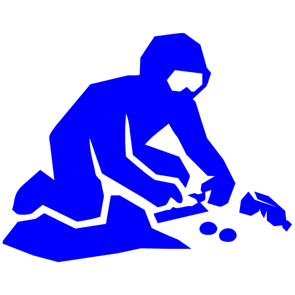
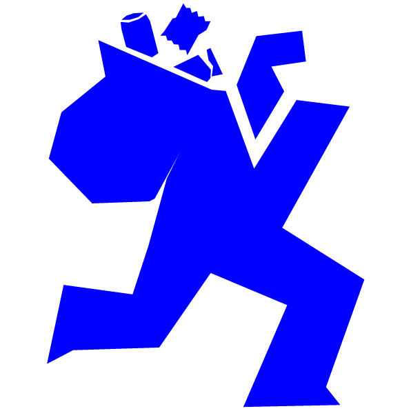
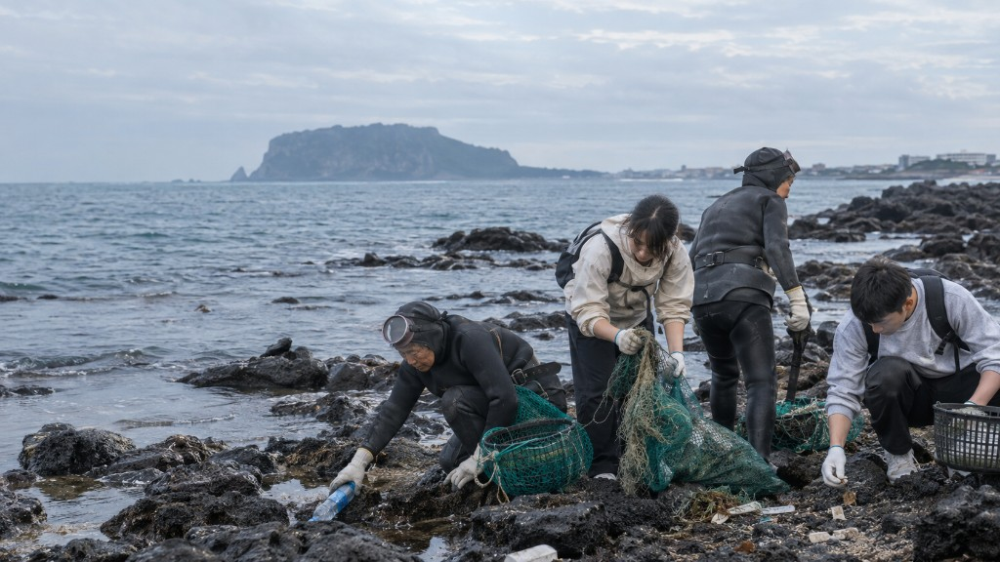
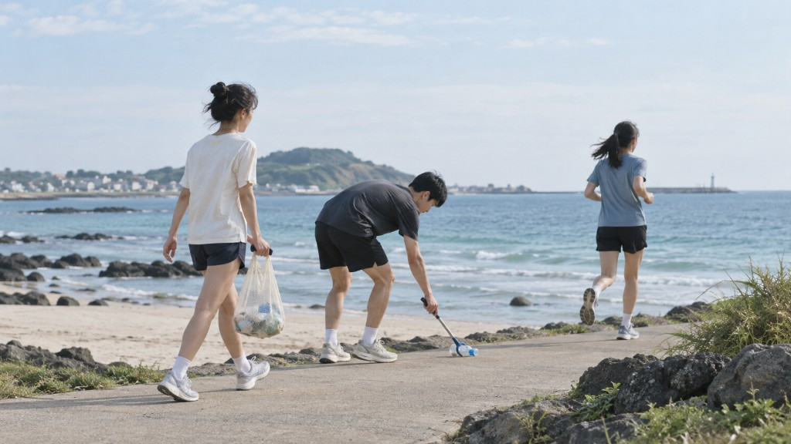
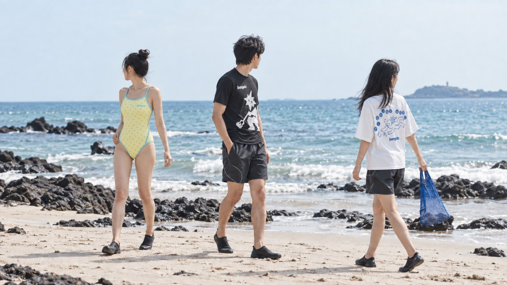

플로빙 컬렉션을 만나보세요

Shop 온라인 스토어지금 굿즈 라인업 만나보기

봉그다는 해녀의 삶에서 시작된, 바다를 지키는 브랜드입니다. 해안을 달리며 쓰레기를 줍는 플로빙을 통해 바다를 즐기는 동시에 환경을 지키는 새로운 문화를 만들어갑니다. 바다를 지키는 일은 거창한 변화가 아닌 작은 한 걸음에서 시작됩니다. 줍고, 만들고, 연결되며 쌓인 작은 실천은 결국 하나의 변화를 만들어냅니다.
봉그다는 바다에서 시작된 브랜드예요. 해변을 지나며 속에 담는 쓰레기를 집어 올리는 순간, 거창한 선언 없이도 브랜드의 씨앗이 싹텄습니다. 그날 바람, 모래 위에 놓인 플라스틱 조각, 물리 보이는 수평선. 이 모든 것이 봉그다의 첫 페이지가 되었습니다.
우리는 바다를 지키는 일을 멀리 앉아 두지 않습니다. 해안을 달리고, 좋고, 그 마음을 곶곶와 옷으로 이어가며, 일상 속에서 바다와 연결되는 방법을 제안합니다. 누군가에게는 낡은 바닷가 풍경이지만, 누군가에게는 매일 아침 마주하는 찬밥 풍경이기도 합니다. 봉그다는 그 경계를 허물고 싶었습니다.
브랜드를 만들면서 우리는 자주 같은 질문을 스스로에게 던졌습니다. ‘우리는 무엇을 팔고 있는가?’ 라는 질문에 답한 제품 목록만으로는 충분하지 않았습니다. 우리가 팔고 싶었던 것은 팀별이나 터서스 그 자체가 아니라, 바다를 향해 한 걸음 내딛는 태도였습니다. 그 태도가 모이면 해변이 바뀌고, 해변이 바뀌면 우리의 하루도 달라진다고 믿습니다.
조용한 해변, 손끝에 닿는 쓰레기, 함께 걷는 사람들의 발자국. 그 작은 기록이 씌여 지금의 브랜드가 되었습니다. 앞으로도 우리는 같은 방식으로 이야기를 이어갈 것입니다.
브랜드 이름에서부터 해변의 시간, 플로빙의 리듬, 우리가 지키려는 약속까지. 하나하나가 서로 연결되어 있습니다. 어느 이야기부터 읽어도 좋습니다. 중요한 것은 없고 나서, 오른 바다 폭으로 한 걸음 가볼 수 있는지입니다.
‘봉그다’는 방언으로 ‘줍다’는 뜻을 담고 있습니다. 바닷가에서 조개를 줍거나, 해변에서 무언가를 집어 올릴 때 쓰는 말입니다. 발음만 들어도 손을 내미는 동작이 떠오르는, 몸에 가까운 언어입니다.
브랜드 이름을 고민할 때 우리는 수많은 후보를 적어 보았습니다. 하지만 결국 돌아온 단어는 이 방언이었습니다. 세련된 영어 이름도, 트렌디한 조어도 가능했지만, 봉그다는 ‘우리가 실제로 하는 일’을 가장 정확하게 담고 있었습니다. 줍는다. 그것이 전부였고, 그것으로 충분했습니다.
이름 속에는 바닷가라는 장소성도 함께 있습니다. 바닷가의 언어는 그곳의 삶을 담습니다. 해녀, 농부, 어부, 그리고 해변을 오가는 모든 사람들의 손끝에서 비롯된 말. 봉그다라는 이름은 그 공동체의 리듬을 빌려 쓰는 것이기도 합니다.
플로빙을 할 때, 달리다가 멈추고, 몸을 숙여 무언가를 집어 올리는 순간이 있습니다. 그 순간을 바닷가 사람들은 ‘봉그다’라고 부릅니다. 브랜드는 그 순간을 매일 반복합니다. 이름이 곧 행동이고, 행동이 곧 브랜드인 셈입니다.
앞으로 봉그다라는 이름을 마주할 때, ‘줍다’는 뜻을 떠올려 주세요. 거창한 구호가 아니라, 손을 뻗는 작은 동작. 그 작은 동작이 모여 지금의 바다를 만들고, 내일의 바다를 만들 것입니다.
봉그다의 이야기는 해녀와 함께한 시간에서 비롯되었습니다. 바다를 살아가는 사람들은 누구보다 바다의 변화를 먼저 느낍니다. 해녀는 수십 년간 같은 바다를 오가며, 그 변화를 몸으로 기억합니다. 물살, 수온, 해조류, 그리고 이물질. 해녀의 몸은 바다의 센서입니다.
처음 해변에서 해녀 어르신들을 만났을 때, 우리는 말보다 행동으로 다가갔습니다. 쓰레기 봉투를 나눠 드리고, 함께 걸으며 조용히 줍습니다. 그날 주운 플라스틱 병, 어업용 그물 조각, 담배꽁초. 하나하나가 바다가 보낸 편지 같았습니다.
해녀는 바다에서 생계를 얻는 사람들입니다. 그래서 바다가 아프면 누구보다 먼저 아픕니다. 봉그다가 해녀와 함께하기로 한 이유도 여기에 있습니다. 환경 문제를 ‘누군가의 일’이 아니라, ‘우리의 일’로 만들고 싶었습니다.
봉그다는 해녀의 손길과 함께 해안에서 쓰레기를 줍기 시작했습니다. 혼자가 아닌, 함께하는 실천이 브랜드의 출발점이며, 오늘의 플로빙과 봉그다 전체의 방향을 만들었습니다.
해녀의 이야기는 브랜드의 뿌리이자, 앞으로도 지키고 싶은 연결입니다. ‘함께 줍고’, ‘바다와 함께’. 모두 같은 바다를 향한 이야기입니다.

봉그다가 말하는 순환은 세 단어로 요약되지 않습니다. 줍고, 만들고, 연결되고. 해안에서 시작된 작은 행동이 굿즈와 옷을 거쳐, 다시 사람과 바다, 도시와 섬을 잇습니다. 이 단어는 슬로건이 아니라, 우리가 매일 반복하는 실질 과정입니다.
철학이라는 말이 멀게 느껴질 수 있습니다. 하지만 봉그다의 철학은 추상적이지 않습니다. 아침에 해안을 달리고, 오후에 주운 자원을 정리하고, 저녁에 그 이야기를 제품과 글로 남깁니다. 하루의 리듬 속에 철학이 있습니다.
우리는 ‘완벽한 환경주의자’를 지향하지 않습니다. 하루하루 조금씩, 할 수 있는 만큼. 플라스틱 하나를 줍지 못한 날이 있어도, 다음 날 다시 해보면 됩니다. 중요한 것은 멈추지 않는 것, 그리고 혼자가 아닌 것.
봉그다의 철학은 끝이 없는 순환입니다. 줍고, 만들고, 연결되고, 다시 줍고. 이것이 끝이 아닌 시작이고, 온 것이 아닌 지금이며, 우리의 일상으로 돌아옵니다.
플로빙(ploving)은 스웨덴어로 ‘줍다’라는 뜻의 ‘플로카 업(plokka up)’과 다이빙(diving)의 합성어로, 다이빙을 하며 바닷속 쓰레기를 줍는 해양 정화 활동입니다. 봉그다는 그 정신을 우리 바다에 맞게 이어가고 있습니다.
플로빙의 매력은 ‘두 가지를 동시에’ 할 수 있다는 점입니다. 운동도 하고, 환경도 지키고. 바쁜 일상 속에서 ‘좋은 일’을 따로 시간을 내지 않아도, 달리는 길에서 실천할 수 있습니다.
봉그다는 플로빙을 특별한 하루의 이벤트가 아니라, 바다를 향한 매일의 선택으로 이야기합니다. 달리고, 멈추고, 줍는. 그 작은 리듬이 해변을 바꿉니다.
혼자 해도 좋고, 여럿이 함께해도 좋습니다. 친구와, 가족과, 처음 만난 사람과. 함께 줍는 시간은 자연스럽게 대화와 연결로 이어집니다.
해안 달리기, 플로빙 하는 방법, 플로빙 컬렉션에서 더 구체적인 이야기를 이어서 읽을 수 있습니다. 오늘부터 한 번, 가볍게 달려보는 것으로 시작해 보세요.

해변을 걸으며 쓰레기를 줍는 일은, 처음부터 혼자 시작한 활동이 아니었습니다. 해녀와 함께 손을 맞대며 바다가 되돌려 놓은 것들을 하나씩 집어 올렸습니다. 그날의 해변은 평소와 다르지 않아 보였지만, 손을 내밀면 늘 무언가가 있었습니다.
함께 줍는다는 것은 단순히 쓰레기를 모으는 일이 아닙니다. 바다에 대해 이야기하고, 계절에 대해 이야기하고, 오늘 물살이 어땠는지 이야기하는 시간이기도 합니다. 해녀 어르신들의 이야기 속에는 우리가 책에서 배우지 못한 바다의 지식이 있었습니다.
봉그다 팀은 처음에 ‘도와드리는 사람’이었습니다. 하지만 시간이 지나면서, ‘함께하는 사람’이 되었습니다. 줍는 속도, 봉투를 나누는 방식, 쉬어 가는 타이밍. 모든 것이 자연스럽게 맞춰졌습니다.
바다를 아는 사람과 함께할 때, 줍는 행동은 더 깊은 의미를 갖습니다. 해녀와의 시간은 봉그다에게 ‘누구를 위해, 왜 줍는가’에 대한 답이 되었습니다. 우리는 바다를 위해, 그리고 바다와 함께 사는 사람들을 위해 줍습니다.
앞으로도 봉그다는 해녀와의 협업을 이어갈 것입니다. 정기적인 해변 정화, 계절별 캠페인, 그리고 그 과정을 기록하는 콘텐츠. 함께 줍는 시간은 브랜드의 가장 중요한 일정 중 하나입니다.
봉그다의 무대는 바다입니다. 에메랄드빛 수면, 검은 현무암 해안, 바람과 파도. 이 풍경 속에서 브랜드는 매일 바다와 마주합니다. 바다는 누군가에겐 여행지이지만, 우리에게는 ‘일터’이자 ‘집’에 가깝습니다.
바다는 계절마다 다른 얼굴을 보여줍니다. 봄의 잔잔한 물결, 여름의 투명한 수면, 가을의 거센 파도, 겨울의 차가운 바람. 봉그다의 플로빙도 계절에 따라 다른 리듬을 가집니다.
바다와 함께한다는 것은, 그 바다가 주는 것을 받아들이는 것입니다. 영감, 재료, 이야기, 그리고 책임. 우리는 바다에서 영감을 얻고, 그 바다를 지키기 위해 노력합니다. 가져가기만 하는 관계가 아니라, 돌려주는 관계를 지향합니다.
바다와 사람, 자연이 맞닿는 해안에서 봉그다는 ‘줍는다’는 행동의 의미를 배웠습니다. 브랜드의 모든 이야기는 이 바다 곁에서 출발하고, 다시 이 바다로 돌아갑니다.
이 해안을 떠나 다른 바다를 걸을 때도, 우리는 같은 태도를 가져갑니다. 바다는 하나이고, 줍는다는 행동도 하나이기 때문입니다. 이곳에서 시작된 이야기가 다른 해변으로, 다른 도시로, 다른 사람들에게로 이어지길 바랍니다.
해안을 달리며 우리는 플라스틱, 어업 쓰레기, 생활 폐기물 등 바다가 되돌려 놓은 흔적들을 하나씩 집어 올립니다. 줍는 행동 자체가 작아 보여도, 반복되면 해변의 풍경은 분명히 달라집니다.
해안 달리기는 봉그다의 일상입니다. 아침 일찍, 또는 해 질 무렵, 바람이 선선할 때 해변을 선택합니다. 파도 소리, 갈매기, 멀리 보이는 등대. 몸과 감각이 함께 움직입니다.
달리는 중에 쓰레기를 발견하면 멈춥니다. 숨을 고르고, 장갑을 낀 손으로 집어 올리고, 봉투에 넣습니다. 다시 달립니다. 이 리듬을 반복하다 보면, 달리기와 줍기의 경계가 사라집니다.
봉그다는 이 과정을 기록하고, 함께 달릴 사람들을 모으며, 바다를 지키는 일상의 리듬을 만들어 갑니다.
편한 신발과 장갑, 작은 쓰레기 봉투만 있으면 됩니다. 완벽한 속도나 거리는 없습니다. 오늘 갈 수 있는 만큼, 오늘 줍을 수 있는 만큼. 그것으로 충분합니다.
플로빙은 어렵지 않습니다. 편한 운동복과 장갑, 쓰레기 봉투만 있으면 시작할 수 있습니다. 해안이나 공원을 가볍게 달리다가, 눈에 보이는 쓰레기를 집어 봉투에 담습니다. 그게 전부입니다.
준비물은 이렇습니다. 편한 운동화, 통기성 좋은 옷, 장갑, 작은 쓰레기 봉투 1~2개, 물병. 햇볕이 강한 날에는 모자와 선크림을 권합니다.
기본 루틴은 이렇습니다. 가볍게 달린다 → 쓰레기를 발견하면 멈춘다 → 줍는다 → 다시 달린다. 처음에는 20~30분만 해도 충분합니다. 거리보다 꾸준함이 중요합니다.
혼자여도 좋고, 함께여도 좋습니다. ‘완벽하게’ 하려고 하지 마세요. ‘오늘 한 번’이면 됩니다.
날카로운 유리나 의료 폐기물은 직접 만지지 말고 신고하세요. 물가나 절벽은 무리하지 않는 것이 좋습니다. 안전하게, 오래도록. 그것도 플로빙의 일부입니다.
봉그다는 바다를 멀리 바라보는 풍경이 아니라, 매일 마주하는 공간으로 생각합니다. 한 번의 이벤트가 아니라 오래 이어지는 실천, 그리고 다음 세대가 마주할 바다까지 함께 생각합니다.
우리가 바다를 위해 약속하는 것들. 정기적인 해변 정화, 친환경 소재 사용, 투명한 생산 과정, 지역 커뮤니티와의 협업. 방향은 분명합니다. ‘덜 해치기’가 아니라 ‘더 돕기’를 지향합니다.
때로는 실패도 있습니다. 그런 날에도 우리는 약속을 포기하지 않습니다. 내일 다시 해보면 됩니다.
오늘 줍는 것, 오늘 만드는 것, 오늘 입는 것이 내일의 해변을 바꿀 수 있다고 믿습니다. 바다를 위한 약속은 봉그다가 놓지 않으려는 가장 단단한 다짐입니다.
이 약속은 혼자 지키는 것이 아닙니다. 제품을 선택해 주시는 분, 플로빙에 함께해 주시는 분, 이 이야기를 나눠 주시는 분. 모두가 약속의 일부입니다.
봉그다가 말하는 순환은 해안에서 시작된 작은 행동이 굿즈와 옷을 거쳐, 다시 사람과 바다, 도시와 섬을 잇는 과정입니다. 세 단어는 브랜드의 모든 활동을 관통합니다.
‘줍고’는 출발점입니다. 손을 내밀어 바다가 되돌려 놓은 것을 집어 올리는 행동. ‘만들고’는 그 경험을 제품과 콘텐츠로 옮기는 과정. ‘연결되고’는 그 메시지가 사람과 사람을 잇는 순간입니다.
각 단계는 독립적이지 않습니다. 줍지 않고 만들 수 없고, 만들지 않고 연결할 수 없습니다. 세 단계가 맞물려 돌아갈 때, 브랜드는 살아 있습니다.
이 세 단계는 브랜드, 해녀, 플로빙, 약속. 어떤 이야기를 읽어도 결국 이 순환으로 돌아옵니다.
줍고, 만들고, 연결되고, 다시 줍고. 그 고리를 끊지 않는 것이 봉그다의 방식입니다.
봉그다는 바다를 지키는 일을 한 번의 캠페인이 아니라, 매일 이어지는 선택으로 생각합니다. 세 가지 가치가 브랜드의 모든 이야기와 제품을 이끕니다.
‘바다를 위하여’. 해안을 달리며 줍는 일로, 바다는 멀리 있는 풍경이 아니라 매일 마주하는 공간입니다. ‘사람과 함께’. 해녀, 그리고 바다를 아끼는 모두와 손을 잡습니다. ‘지속가능하게’. 한 번의 캠페인이 아니라, 매일 입고 쓰는 습관으로.
세 가치는 서로 충돌하지 않습니다. 바다를 위해 사람과 함께하고, 함께하는 일을 오래 지속합니다.
이 가치들은 회의실에서 정한 문구가 아니라, 해변에서, 작업실에서, 일상에서 확인한 것들입니다.
완벽하지 않아도, 방향을 잃지 않는 것. 그것이 우리가 ‘지키는 것’이라고 부르는 이유입니다.
플로빙 컬렉션은 바다를 향해 달릴 때 입는 봉그다의 수영복과 의류 라인입니다. 해안에서의 움직임을 위해 만들어졌으며, 입는 순간 메시지가 일상으로 들어옵니다.
수영복, 래시가드, 티셔츠. 공통점은 움직임을 방해하지 않는 핏과, 바다를 생각하게 만드는 디테일입니다.
해변에서만 입는 옷이 아닙니다. 공원을 달릴 때, 통근할 때, 여행지에서. 어디서든 같은 태도를 전할 수 있습니다.
달리고, 줍고, 바다를 지키는 태도를 옷으로 이어갑니다. 플로빙 컬렉션에서 전체 라인업을 만나보세요.
서로 다른 해변, 서로 다른 도시, 같은 태도. 그 연결을 볼 때마다 ‘만들다’와 ‘연결되다’의 의미를 다시 느낍니다.
해안에서 시작된 작은 행동은 텀블러, 티셔츠, 키링, 수영용품 같은 굿즈와 옷으로 이어집니다. 봉그다는 제품을 만들 때 친환경 소재와 재활용 가능한 자원을 우선합니다.
소재 선택의 기준은 세 가지입니다. 환경에 미치는 영향, 오래 쓸 수 있는 내구성, 다시 재활용하거나 분해할 수 있는 가능성. 이 셋을 만족하지 못하면 과감히 제외합니다.
재활용 PET, 유기농 면, 생분해 가능한 포장재. 제품마다 구체 소재는 달라도, 방향은 같습니다. 말과 물건 사이에 간극이 없도록.
굿즈는 ‘예쁜 소비’가 아니라 ‘의미 있는 소비’를 지향합니다. 텀블러를 오래 쓰고, 티셔츠를 여러 시즌 입고, 키링을 선물하며 이야기를 나눕니다.
줍고, 만들고, 연결되고. 이 순환이 굿즈를 통해 다시 사람과 바다를 잇습니다.

봉그다의 로고는 브랜드의 얼굴입니다. 파도를 닮은 곡선과 단단한 글자가 만나, 바다와 사람의 관계를 한눈에 담습니다.
색은 바다의 푸름을 기준으로 잡았습니다. 화면에서도, 옷에서도, 굿즈에서도 같은 색이 반복되며 기억을 남깁니다.
로고는 크게 쓰일 때도, 작게 찍힐 때도 읽혀야 합니다. 해변의 바람 속에서도, 도시의 거리에서도 같은 얼굴을 유지합니다.
BI는 장식이 아니라 약속의 표시입니다. 어디에 놓여도 ‘봉그다’라는 태도가 먼저 보이도록 다듬었습니다.
앞으로도 로고는 같은 자리를 지키며, 이야기와 제품이 바뀌어도 방향을 잃지 않게 합니다.

Shop 온라인 스토어